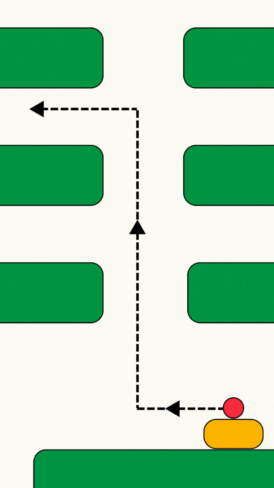

Seleccione una opción
MariaVision (Cámara + Prompt)
Inicializando cámara...
(Aquí aparecerá la respuesta)
Preguntar a MarIA
Esperando pregunta...
(La respuesta aparecerá aquí)

Escanear Código Barras
Apunte la cámara al código de barras...
Código detectado: ---
Producto: ---
(La explicación aparecerá aquí)
Llamar a un Empleado
Iniciando llamada...